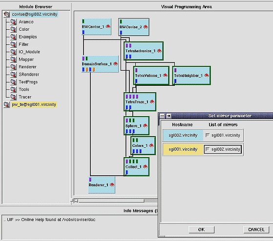

| You can use this menu item as Master only! |
The last three menu options of CSCW are provided for mirroring a whole pipeline (also distributed) or part of it to another host (and to delete it):
In order to Set Mirrors, you have
to add at least one partner/host before; in case of the example below you
are working as user covise@sgi002.visenso,
and you have added pw_te@sgi001.visenso.de
as a partner. You can now specify sgi001.visenso.de
as mirror of sgi002.visenso.de
(and sgi002.visenso.de as mirror
of sgi001.visenso.de).

Mirror Node:
If you have set mirrors, you can issue Mirror Node in order to mirror either a complete map (default) or a selected group of nodes (for selection of nodes see Grouping of Modules ). In case of the example above the mirrored nodes would be shown in yellow.
Delete Mirrored Nodes:
Delete Mirrored Nodes is just the inverse operation of Mirror Node, i.e. it removes the mirrored nodes and leaves your original map unchanged.
For more information about mirroring see User's Guide, chapter COVISE CE, section Mirroring.